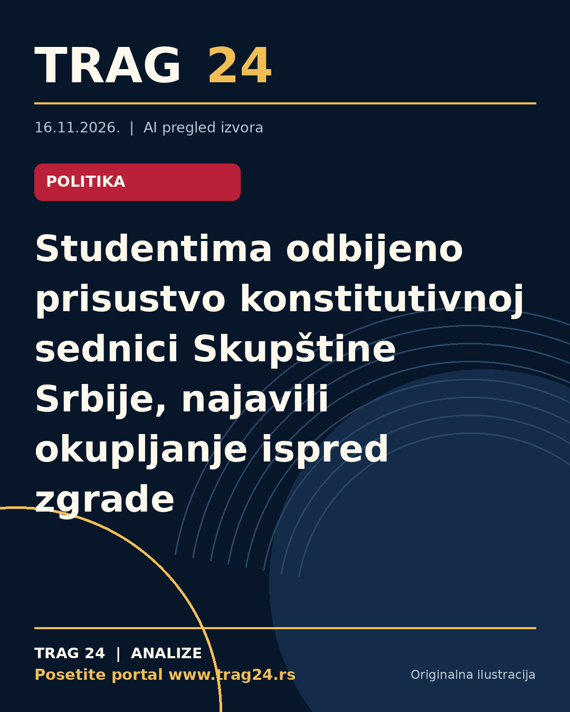

Studentima odbijeno prisustvo konstitutivnoj sednici Skupštine Srbije, najavili okupljanje ispred zgrade

ŠTA SE DOGODILO
Odlukom generalnog sekretara Narodne skupštine Srbije studentima je odbijeno prisustvo konstitutivnoj sednici sa galerije Velike sale. Uprkos tome, studenti su najavili da će se okupiti ispred zgrade parlamenta, u Pionirskom parku, kako bi pružili podršku kandidatima Studentske liste i pratili događaj zajedno građanima i studentima.
HRONOLOGIJA
Konstitutivna sednica Skupštine Srbije zakazana je za 17. novembar, sa početkom u 10 sati, a studenti su najavili okupljanje za 8 sati u Pionirskom parku. Sednicom će predsedavati najstariji poslanik, a na dnevnom redu su potvrđivanje poslaničkih mandata, izbor predsednika i potpredsednika Skupštine, imenovanje generalnog sekretara i izbor članova radnih tela i međunarodnih delegacija. Nakon okupljanja, studenti pozivaju građane na miran razlaz i praćenje sednice iz svojih domova ili drugih prostora.
ŠTA NAVODE IZVORI
Studenti Ekonomskog fakulteta u blokadi na društvenim mrežama su objavili da im je odbijeno prisustvo konstitutivnoj sednici. Ipak, istakli su da ih to neće sprečiti da budu ispred Skupštine. Takođe navode da očekuju zajedničko okupljanje sa građanima i da pozivaju na mirno razilaženje po završetku događaja. Izveštaji medija potvrđuju glavne informacije – odluku o zabrani prisustva i studentske planove okupljanja ispred parlamenta.
ŠTA JE POTVRĐENO
Potvrđeno je da je generalni sekretar Narodne skupštine doneo odluku da studentima ne dozvoli prisustvo na sednici sa galerije Velike sale. Takođe je potvrđeno da će konstitutivna sednica biti održana 17. novembra, da će na njoj biti potvrđeni poslanički mandati, izabrani predsednik i potpredsednici Skupštine, kao i imenovan generalni sekretar. Studentska lista je osvojila apsolutnu većinu na poslednjim parlamentarnim izborima, dok će Srpska napredna stranka biti opozicija.
ŠTA NIJE POTVRĐENO
Nije potvrđeno koje su konkretne razloge za odbijanje prisustva studentima na galeriji, niti ima izjava zvaničnika Narodne skupštine o toj odluci. Takođe nije poznato na koji će tačan način studenti pratiti sednicu niti da li će imati drugačiji oblik prisustva unutar Skupštine.
ŠTA OSTАJE OTVORENO: Ostaje otvoreno pitanje kako će učestvovanje Studentske liste u novom sazivu uticati na rad Skupštine, posebno imajući u vidu najave promena u načinu izbora predsednika skupštinskih odbora i reakcije opozicije. Takođe nije jasno da li će i na koji način biti izmeštena ili promenjena praksa prisustva građana i studenata na sličnim sednicama ubuduće.
Izvori
- https://nova.rs/vesti/politika/studentima-odbijen-zahtev-za-prisustvo-konstitutivnoj-sednici-skupstine-srbije-oni-nasli-resenje/
- https://n1info.rs/vesti/studentima-zabranjen-ulazak-na-sednicu-okupljanje-ispred-skupstine/
- https://www.novosti.rs/vesti/politika/1671743/studentska-lista-skupstina-srbije
Ova analiza je pripremljena uz pomoć veštačke inteligencije na osnovu javno dostupnih izvora. Navodi izvora nisu nužno nezavisno potvrđeni.